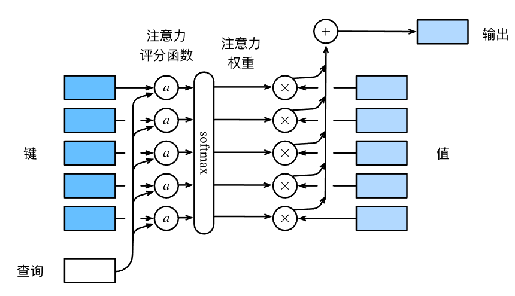

所学的自注意力机制的知识由李沐老师教授，感恩沐神！
注意力提示双组件与查询、键、值
注意力提示双组件分为非自主性提示与自主性提示。非自主性提示可以理解为环境中物体的突出性带来的提示。比如，一杯红咖啡摆在一堆报纸中间，咖啡是红色的，这种突出性的提示就是环境带来的非自主性提示。与之相反的是自主性提示，当我们喝完咖啡，会兴奋，兴奋起来开始阅读报纸。也就是说人们受主观意愿推动去集中于看报纸，这就是自主性提示，这个自主性提示来自人们自己。
在非自主性提示中，分为两种，一种是感官的输入，称为值，通常是一些感官输入，比如咖啡的颜色，书本的字体颜色。另一种是非意志的线索，称为键，比如书本就是一个键，咖啡就是一个键，都是客观存在的非意志的线索。
自主性提示，通常被称为查询，它们是一些意志线索，是人的主观意愿。
注意力机制做的是什么事情？一般来说，环境中的非意志线索——键会与感官输入——值，一一对应。这时，主观的意志因素——查询通过注意力汇聚（也称注意力池化）选择其中一个值，然后输出。这样就做到了所谓的集中注意力。
非参数注意力汇聚：$Nadaraya-Watson$ 核回归
在注意力机制的早期，或者说是注意力机制未出现时，人们通过用平均汇聚（平均池化）处理问题，效果比较差。后来，$Nadaraya$和$Watson$提出了Nadaraya-Watson 核回归。公式如下：
给定查询x，通过这个f函数，可以对每个键值对附上权重，权重最大的值，即为注意力集中处。其中，xi是每个键，$y_i$是每个值，K是核，本质上是一个函数，后面我们再举例核的选取。这里我们再注意一下分母，分母的$x_j$也是每个键，只是为了保证公式内符号不冲突，两次遍历一个用i一个用j，实际代表的意义是一样的。
当K是高斯核时，即K公式为：
代入核回归公式，有：
这样，当选取的是高斯核，其实注意力机制与$softmax$有关了。
在$Nadaraya-Watson$ 核回归下，如果一个键xi越是接近给定的查询x，那么分配给这个键对应值$y_i$的注意力权重就越大，也就获得了更多的注意力。
这是早期的注意力机制，使用的$Nadaraya-Watson$ 还只是一个非参数的注意力汇聚方法。
带参数的注意力汇聚
前面提到，$Nadaraya-Watson$ 实际上是一个非参数的注意力汇聚方法，我们当然可以自己加上一个可学习的参数到该注意力汇聚中，得到一个带参数的注意力汇聚。
具体操作，只需要在下面的查询x和键xi之间的距离乘以可学习参数w即可：
通过训练，即可学习到较合适的w，得到较合适的注意力汇聚函数。
注意力评分函数
注意力汇聚函数f，可以被写成下面的加权和：
其中，q是查询query，k是键key，v是值value，m是键值对的个数，α是一个用q和k，通过特定的函数计算出来的注意力权重，公式如下：
其中a就是我们的注意力评分函数。注意力评分函数a，通过查询q和键k，输出一个结果，然后将结果送入到$softmax$中，计算出注意力权重，本质上是键对应的值的概率分布，概率小，选择该键值对的机会就小，对应得到更少的注意力。
特别地，高斯核函数的注意力评分函数是指数exp里的部分，即(-1 / 2)(x - xi)²。注意力评分函数不是固定的，可以自己选择注意力评分函数，然后把这个函数的输出结果输入到$softmax$中计算出注意力权重。
宏观来看，注意力机制可以用下图描述，它实现了上面的公式。

加性注意力
一般来说，当查询和键是不同长度的矢量时，可以使用加性注意力作为评分函数。
比如，q是长为q的向量$\large{\mathbb{R}^q}$，k是长度为k的向量$\large{\mathbb{R}^k}$，k与q不相同。这时，加性注意力的评分函数为：
其中，可学习的参数是$\large{W_q}$、$\large{W_k}$和$\large{W_v}$，$\large{W_q}$是h×q的矩阵$\large{R^{h×q}}$，$\large{W_k}$是h×k的矩阵$\large{R^{h×k}}$，$\large{W_v}$是h×1的向量$\large{R^h}$。这个公式保证了最后得到的注意力权重是一个实数。
观察式子，不难发现，其实注意力评分函数是通过将query和key链接起来然后传入感知机中实现的，使用$\tanh$作为激活函数，而且无偏置项。h是隐藏单元数，是一个超参数。
看代码实现会促进理解：
class AdditiveAttention(nn.Module):
"""加性注意力"""
def __init__(self, key_size, query_size, num_hiddens, dropout, **kwargs):
super(AdditiveAttention, self).__init__(**kwargs)
self.W_k = nn.Linear(key_size, num_hiddens, bias=False)
self.W_q = nn.Linear(query_size, num_hiddens, bias=False)
self.w_v = nn.Linear(num_hiddens, 1, bias=False)
self.dropout = nn.Dropout(dropout)
def forward(self, queries, keys, values, valid_lens):
queries, keys = self.W_q(queries), self.W_k(keys)
# 在维度扩展后，
# queries的形状：(batch_size，查询的个数，1，num_hidden)
# key的形状：(batch_size，1，“键－值”对的个数，num_hiddens)
# 使用广播方式进行求和
features = queries.unsqueeze(2) + keys.unsqueeze(1)
features = torch.tanh(features)
# self.w_v仅有一个输出，因此从形状中移除最后那个维度。
# scores的形状：(batch_size，查询的个数，“键-值”对的个数)
scores = self.w_v(features).squeeze(-1)
self.attention_weights = masked_softmax(scores, valid_lens)
# values的形状：(batch_size，“键－值”对的个数，值的维度)
return torch.bmm(self.dropout(self.attention_weights), values)
Masked-$softmax$：掩蔽$softmax$操作
前面的代码中，可以注意到有个叫做masked-$softmax$操作，这里简单记录一下。
$softmax$操作是用于输出一个概率分布，在注意力机制中，可以作为注意力的权重。在数据中，某些文本序列有时被填充了没有意义的特殊词元，为了只将有意义的词元注入到注意力汇聚中获得注意力权重，可以指定一个有效词元长度，使得计算$softmax$时，超出有效长度的部分被过滤掉，这就是Masked-$softmax$。
超出有效长度的部分归为0，达到被掩蔽的作用。
缩放点积注意力
当查询和键长度相同，可以用缩放点积注意力评分函数。
查询$\mathbf Q\in\mathbb R^{n\times d}$、键$\mathbf K\in\mathbb R^{m\times d}$和值$\mathbf V\in\mathbb R^{m\times v}$的缩放点积注意力是：
$softmax$里的内容就是缩放点积注意力评分函数。其中，d是查询和键的长度，n是小批量，m是键值对数，v是值的长度。
代码实现如下，促进理解：
class DotProductAttention(nn.Module):
"""缩放点积注意力"""
def __init__(self, dropout, **kwargs):
super(DotProductAttention, self).__init__(**kwargs)
self.dropout = nn.Dropout(dropout)
# queries的形状：(batch_size，查询的个数，d)
# keys的形状：(batch_size，“键－值”对的个数，d)
# values的形状：(batch_size，“键－值”对的个数，值的维度)
# valid_lens的形状:(batch_size，)或者(batch_size，查询的个数)
def forward(self, queries, keys, values, valid_lens=None):
d = queries.shape[-1]
# 设置transpose_b=True为了交换keys的最后两个维度
scores = torch.bmm(queries, keys.transpose(1,2)) / math.sqrt(d)
self.attention_weights = masked_softmax(scores, valid_lens)
return torch.bmm(self.dropout(self.attention_weights), values)
自注意力
给定由词元组成的序列$x_1$，$x_2$，……，$x_n$，其中任意$x_i \in \mathbb{R}^d$(1 $\leq$ i $\leq$ n)，n是序列长度，d是词元特征。自注意力输出为一个长度相同的序列$y_1$，$y_2$，……，$y_n$，其中：
每一个$y_i$都是对应词元的注意力权重。
也就是说，自注意力其实就是把查询变成每个键自己，通过某种运算来直接计算得到句子在编码过程中每个位置上的注意力权重；然后再以权重和的形式来计算得到整个句子的隐含向量表示。
位置编码
绝对位置信息
在处理词元序列时，循环神经网络是逐个的重复地处理词元的， 而自注意力则因为并行计算而放弃了顺序操作。 为了使用序列的顺序信息，通过在输入表示中添加位置编码，来注入绝对的或相对的位置信息。
位置编码信息可以通过学习得到，也可以通过直接固定得到。这里介绍Transformer使用的基于正弦函数和余弦函数的固定位置编码方法。
假设输入$\bf{X} \in \mathbb{R}^{n×d}$是batch中一个序列中，n个词元的d维嵌入表示。位置编码使用相同形状的位置嵌入矩阵$\bf{P} \in \mathbb{R}^{n×d}$，输出$\bf{X + P}$。位置嵌入矩阵第i行的第$\bf{2j}$列和第$\bf{2j + 1}$列的元素由如下公式计算：
为了让基于正弦函数和余弦函数地固定位置编码方法更加直观，下面的图片展示了相应的效果，每一行$row$是词元所在的位置，四条不同颜色的曲线代表不同维度下的正弦函数。可以看到，选定一个$row$，不同$col$对应的三角函数值是不一样的，也就是说同一个词元，不同维度特征得到的位置编码不同，不同词元之间的位置编码也不尽相同。
相对位置信息
上述所作的编码，是绝对位置编码。如果已知任何确定的位置偏移$\delta$，位置$i + \delta$处的位置编码可以线性投影到位置$i$处的位置编码。
令$\omega = 1 / 10000^{2j/d}$，那么任何一对$(p_{i, 2j}, p_{i, 2j+1})$都可以投影到$(p_{i+\delta, 2j}, p_{i+\delta, 2j+1})$，具体公式可见：
很明显，这是通过上面的2×2投影矩阵做到的，这个矩阵不依赖于任何位置的索引i。
多头注意力
自注意力机制的缺陷就是：模型在对当前位置的信息进行编码时，会过度的将注意力集中于自身的位置，因此$Transfomer$作者提出了通过多头注意力机制来解决这一问题。
在实践中，当给定相同的查询、键和值的集合时， 我们希望模型可以基于相同的注意力机制学习到不同的行为， 然后将不同的行为作为知识组合起来， 捕获序列内各种范围的依赖关系 （例如，短距离依赖和长距离依赖关系）。 因此，允许注意力机制组合使用查询、键和值的不同 子空间表示（$representation$ $subspaces$）可能是有益的。
为此，与其只使用单独一个注意力汇聚， 我们可以用独立学习得到的ℎ组不同的 线性投影（$linear$ $projections$）来变换查询、键和值。 然后，这ℎ组变换后的查询、键和值将并行地送到注意力汇聚中。 最后，将这ℎ个注意力汇聚的输出拼接在一起， 并且通过另一个可以学习的线性投影进行变换， 以产生最终输出。 这种设计被称为多头注意力（$multihead$ $attention$） 对于ℎ个注意力汇聚输出，每一个注意力汇聚都被称作一个头（$head$）。 展示了使用全连接层来实现可学习的线性变换的多头注意力。
给定查询$\large{\bf{q} \in \mathbb{R}^{d_q}}$、键$\large{\bf{k} \in \mathbb{R}^{d_k}}$和值$\large{\bf{v} \in \mathbb{R}^{d_v}}$，每个注意力头$\bf{h_i}$(i = 1, 2, …, h)的计算方法为：
其中，可学习的参数为$\large{W_i^{\small{(q)}} \in \mathbb{R}^{p_q×d_q}}$、$\large{W_i^{\small{(k)}} \in \mathbb{R}^{p_k×d_k}}$和$\large{W_i^{\small{(v)}} \in \mathbb{R}^{p_v×d_v}}$以及注意力汇聚函数f。f可以是缩放点积注意力，也可以是加性注意力。
多头注意力的输出是多个头经过连结，再经过一个线性转换（全连接层）的结果，输出为：
其中，$\large{W_o \in \mathbb{R}^{p_o×h×p_v}}$是可学习参数。
在实现的过程中，通常用缩放点积注意力作为每一个注意力头。令$p_q = p_k = p_v = p_o / h$，这时候就可以实现$h$个头的并行计算。我们来看代码如何实现，以促进理解。在实现中，$p_o$就是参数$num_hiddens$。
class MultiHeadAttention(nn.Module):
"""多头注意力"""
def __init__(self, key_size, query_size, value_size, num_hiddens,
num_heads, dropout, bias=False, **kwargs):
# num_hiddens是词元特征数
super(MultiHeadAttention, self).__init__(**kwargs)
self.num_heads = num_heads
self.attention = d2l.DotProductAttention(dropout)
self.W_q = nn.Linear(query_size, num_hiddens, bias=bias)
# 把查询的特征数转换为词元特征数
self.W_k = nn.Linear(key_size, num_hiddens, bias=bias)
# 把键的特征数转换为词元特征数
self.W_v = nn.Linear(value_size, num_hiddens, bias=bias)
# 把值的特征数转换为词元特征数
self.W_o = nn.Linear(num_hiddens, num_hiddens, bias=bias)
# 把多个头的特征数转换为输出特征数
def forward(self, queries, keys, values, valid_lens):
# queries，keys，values的形状:
# (batch_size，查询或者“键－值”对的个数，num_hiddens)
# valid_lens 的形状:
# (batch_size，)或(batch_size，查询的个数)
# 经过变换后，输出的queries，keys，values 的形状:
# (batch_size*num_heads，查询或者“键－值”对的个数，
# num_hiddens/num_heads)
queries = transpose_qkv(self.W_q(queries), self.num_heads)
keys = transpose_qkv(self.W_k(keys), self.num_heads)
values = transpose_qkv(self.W_v(values), self.num_heads)
if valid_lens is not None:
# 在轴0，将第一项（标量或者矢量）复制num_heads次，
# 然后如此复制第二项，然后诸如此类。
valid_lens = torch.repeat_interleave(
valid_lens, repeats=self.num_heads, dim=0)
# output的形状:(batch_size*num_heads，查询的个数，
# num_hiddens/num_heads)
output = self.attention(queries, keys, values, valid_lens)
# output_concat的形状:(batch_size，查询的个数，num_hiddens)
output_concat = transpose_output(output, self.num_heads)
return self.W_o(output_concat)
多个头的并行计算是通过下面这两个转置函数实现的。transpose_output函数反转了transpose_qkv函数的操作。
def transpose_qkv(X, num_heads):
"""为了多注意力头的并行计算而变换形状"""
# 输入X的形状:(batch_size，查询或者“键－值”对的个数，num_hiddens)
# 输出X的形状:(batch_size，查询或者“键－值”对的个数，num_heads，
# num_hiddens/num_heads)
X = X.reshape(X.shape[0], X.shape[1], num_heads, -1)
# 输出X的形状:(batch_size，num_heads，查询或者“键－值”对的个数,
# num_hiddens/num_heads)
X = X.permute(0, 2, 1, 3)
# 最终输出的形状:(batch_size*num_heads,查询或者“键－值”对的个数,
# num_hiddens/num_heads)
return X.reshape(-1, X.shape[2], X.shape[3])
def transpose_output(X, num_heads):
"""逆转transpose_qkv函数的操作"""
X = X.reshape(-1, num_heads, X.shape[1], X.shape[2])
X = X.permute(0, 2, 1, 3)
return X.reshape(X.shape[0], X.shape[1], -1)
很容易看到，经过多头注意力后的输出形状并未改变，与查询、键和值的形状相同，均为(batch_size，查询或者“键－值”对的个数，$num_hiddens$)。
Transformer
Transformer完全基于注意力机制，没有任何卷积层或循环神经网络层。
尽管Transformer最初是应用于在文本数据上的序列到序列学习，但现在已经推广到各种现代的深度学习中，例如语言、视觉、语音和强化学习领域。
模型
整体架构如下图：
Transformer是由基于自注意力模块叠加而成的编码器和解码器组成的。源序列和目标序列的嵌入将加上位置编码，再分别输入打编码器和解码器中。
从宏观角度来看，Transformer的编码器由多个相同的块叠加而成，共有n层。每个块都有两个子层（后续用$sublayer$表示子层）。第一个子层是多头自注意力汇聚。第二个子层是基于位置的前馈网络。
更具体来说，编码器的自注意力的查询、键和值都是来自前一个编码器块的输出。每个子层都采用了残差连接和层规范化。
输入序列的每一个词元$\Large{\bf{x} \in \mathbb{R}^d}$经过编码器的一层后的输出也是一个$\large{\bf{d}}$维的向量。
Transformer的解码器也是由多个相同的块叠加而成的，并且块中使用了残差连接和层规范化。然而，除了编码器中描述的两个子层之外，解码器还在这两个子层之间插入第三个子层，称为编码器-解码器注意力层。在这个层中，查询来自前一个解码器层的输出，而键和值来自整个编码器的输出。
解码器解码的每个词元都只能考虑该词元之前的所有词元，而不能考虑此词元往后的词元，这称为掩蔽注意力，这可以确保预测仅依赖于已生成的输出词元。
基于位置的前馈网络
本质上，基于位置的前馈网络是在对一个序列的所有词元使用同一个多层感知机进行变换。
在下面的实现中，输入X的形状（批量大小，时间步数或序列长度，ffn_num_input）将被一个两层的感知机转换成形状为（批量大小，时间步数或序列长度，ffn_num_outputs）的输出张量。
class PositionWiseFFN(nn.Module):
# """基于位置的前馈网络"""
def __init__(self, ffn_num_input, ffn_num_hiddens, ffn_num_outputs,
**kwargs):
super(PositionWiseFFN, self).__init__(**kwargs)
self.dense1 = nn.Linear(ffn_num_input, ffn_num_hiddens)
self.relu = nn.ReLU()
self.dense2 = nn.Linear(ffn_num_hiddens, ffn_num_outputs)
def forward(self, X):
return self.dense2(self.relu(self.dense1(X)))
这里插述一下关于nn.Linear的操作。
众所周知，nn.Linear就是一个单层感知机，参数是(input, output)，通常这个参数就是Linear的权重矩阵。
对于一个二维的输入，input是输入特征的维度，也就是矩阵的最后一维。对一张图片来说（形状为h*w*c），特征维是通道c。output是该层感知机的隐藏单元数。单层感知机的操作就是把二维输入最后一维的维数转换为隐藏单元数，而其他的维度都视为样本数。比如输入矩阵形状为(x，y)，单层感知机的隐藏单元数为z，也就是说Linear的参数设置为(y，z)。于是，经过Linear的处理，结果为(x，z)。
对于一个三维或者三维以上的输入，同理，它只将最后一维视为特征维进行变换，而其他维统一视作样本数。比如，一个形状为(batch_size，valid_lens，size)的输入矩阵，Linear首先会把它看成(batch_size*valid_lens，size)的二维矩阵，然后再进行变换，变换为(batch_size*valid_lens，num_hiddens)。
可以观察到，Linear不会变化样本维，只会变化特征维。俗称，改变张量的最里层维度的尺寸。
残差连接和层规范化
残差连接被认为是深度网络的必备技术，提出者是何凯明，其论文出处：
Deep Residual Learning for Image Recognition (thecvf.com)
层规范化同批量规范化一样，都是正则化的重要手段，但是在自然语言处理中，层规范化的效果要优于批量规范化，层规范化和批量规范化的区别在这篇博客中解释地非常到位，在此不再赘述：
BatchNorm和LayerNorm——通俗易懂的理解-CSDN博客
代码实现如下：
class AddNorm(nn.Module):
"""残差连接后进行层规范化"""
def __init__(self, normalized_shape, dropout, **kwargs):
super(AddNorm, self).__init__(**kwargs)
self.dropout = nn.Dropout(dropout)
# 随机丢弃数据的一些特征，但总体形状不变
self.ln = nn.LayerNorm(normalized_shape)
# LayerNorm的输入参数是[句子长度，每个单词的特征维度数]，很明显LayerNorm不改变输入样本的特征
def forward(self, X, Y):
return self.ln(self.dropout(Y) + X)
编码器
有了前面的铺垫，下面可以来实现编码器中的一个块：
class EncoderBlock(nn.Module):
# """Transformer编码器块"""
# 这只是编码器的一个块
# Transformer编码器中的任何块都不会改变其输入的形状
def __init__(self, key_size, query_size, value_size, num_hiddens,
norm_shape, ffn_num_input, ffn_num_hiddens, num_heads,
dropout, use_bias=False, **kwargs):
super(EncoderBlock, self).__init__(**kwargs)
self.attention = d2l.MultiHeadAttention(
key_size, query_size, value_size, num_hiddens, num_heads, dropout,
use_bias)
self.addnorm1 = AddNorm(norm_shape, dropout)
self.ffn = PositionWiseFFN(
ffn_num_input, ffn_num_hiddens, num_hiddens)
self.addnorm2 = AddNorm(norm_shape, dropout)
def forward(self, X, valid_lens):
Y = self.addnorm1(X, self.attention(X, X, X, valid_lens))
return self.addnorm2(Y, self.ffn(Y))
测试一下：
X = torch.ones((2, 100, 24))
valid_lens = torch.tensor([3, 2])
encoder_blk = EncoderBlock(24, 24, 24, 24, [100, 24], 24, 48, 8, 0.5)
encoder_blk.eval()
print(encoder_blk(X, valid_lens).shape)
结果：
torch.Size([2, 100, 24])
然后，可以根据这个编码器的基本块，堆叠n个，实现最后的编码器：
class TransformerEncoder(d2l.Encoder):
# """Transformer编码器"""
def __init__(self, vocab_size, key_size, query_size, value_size,
num_hiddens, norm_shape, ffn_num_input, ffn_num_hiddens,
num_heads, num_layers, dropout, use_bias=False, **kwargs):
super(TransformerEncoder, self).__init__(**kwargs)
self.num_hiddens = num_hiddens
self.embedding = nn.Embedding(vocab_size, num_hiddens)
self.pos_encoding = d2l.PositionalEncoding(num_hiddens, dropout)
self.blks = nn.Sequential()
for i in range(num_layers):
self.blks.add_module("block" + str(i),
EncoderBlock(key_size, query_size, value_size, num_hiddens,
norm_shape, ffn_num_input, ffn_num_hiddens,
num_heads, dropout, use_bias))
def forward(self, X, valid_lens, *args):
# 因为位置编码值在-1和1之间，
# 因此嵌入值乘以嵌入维度的平方根进行缩放，
# 然后再与位置编码相加。
X = self.pos_encoding(self.embedding(X) * math.sqrt(self.num_hiddens))
for i, blk in enumerate(self.blks):
X = blk(X, valid_lens)
self.attention_weights[i] = blk.attention.attention.attention_weights
return X
测试一下：
encoder = TransformerEncoder(
200, 24, 24, 24, 24, [100, 24], 24, 48, 8, 2, 0.5)
encoder.eval()
valid_lens = torch.tensor([3, 2])
print(encoder(torch.ones((2, 100), dtype=torch.long), valid_lens).shape)
结果：
torch.Size([2, 100, 24])
解码器
Transformer解码器也是由多个相同的块组成。每个块包含三个子层：解码器自注意力、“编码器-解码器”注意力和基于位置的前馈网络。这些子层也都被残差连接和层规范化围绕。
前面说到了掩蔽多头解码器的自注意力层（第一个子层）中，查询、键和值都来自上一个解码器的输出。我们知道，在序列到序列模型中，训练阶段的输出序列所有位置（时间步）的词元都是已知的；然而，在预测阶段，其输出序列的词元是逐个生成的。因此，为了在解码器中保留这个自回归属性，其掩蔽多头解码器的自注意力层设置了参数dec_valid_lens，以便任何查询，都只会与解码器中所有已经生成词元的位置（即直到该查询位置为止）进行注意力计算。
下面搭建一个解码器块：
class DecoderBlock(nn.Module):
# """解码器中第i个块"""
def __init__(self, key_size, query_size, value_size, num_hiddens,
norm_shape, ffn_num_input, ffn_num_hiddens, num_heads,
dropout, i, **kwargs):
super(DecoderBlock, self).__init__(**kwargs)
self.i = i
self.attention1 = d2l.MultiHeadAttention(
key_size, query_size, value_size, num_hiddens, num_heads, dropout)
self.addnorm1 = AddNorm(norm_shape, dropout)
self.attention2 = d2l.MultiHeadAttention(
key_size, query_size, value_size, num_hiddens, num_heads, dropout)
self.addnorm2 = AddNorm(norm_shape, dropout)
self.ffn = PositionWiseFFN(ffn_num_input, ffn_num_hiddens,
num_hiddens)
self.addnorm3 = AddNorm(norm_shape, dropout)
def forward(self, X, state):
enc_outputs, enc_valid_lens = state[0], state[1]
# 训练阶段，输出序列的所有词元都在同一时间处理，
# 因此state[2][self.i]初始化为None。
# 预测阶段，输出序列是通过词元一个接着一个解码的，
# 因此state[2][self.i]包含着直到当前时间步第i个块解码的输出表示，也就是上一个解码器块的输出
# 第i个解码器块位于第i个时间步
if state[2][self.i] is None:
key_values = X
else:
key_values = torch.cat((state[2][self.i], X), axis=1)
state[2][self.i] = key_values
if self.training:
batch_size, num_steps, _ = X.shape
# dec_valid_lens的开头:(batch_size,num_steps),
# 其中每一行是[1,2,...,num_steps]
# 从这里可以知道，valid_lens是所有词元数
dec_valid_lens = torch.arange(
1, num_steps + 1, device=X.device).repeat(batch_size, 1)
# 产生一个(batch_size, num_steps)形状的dec_valid_lens
else:
dec_valid_lens = None
# 自注意力
X2 = self.attention1(X, key_values, key_values, dec_valid_lens)
Y = self.addnorm1(X, X2)
# 编码器－解码器注意力。
# enc_outputs的开头:(batch_size,num_steps,num_hiddens)
Y2 = self.attention2(Y, enc_outputs, enc_outputs, enc_valid_lens)
Z = self.addnorm2(Y, Y2)
return self.addnorm3(Z, self.ffn(Z)), state
测试一下：
decoder_blk = DecoderBlock(24, 24, 24, 24, [100, 24], 24, 48, 8, 0.5, 0)
decoder_blk.eval()
X = torch.ones((2, 100, 24))
state = [encoder_blk(X, valid_lens), valid_lens, [None]]
print(decoder_blk(X, state)[0].shape)
结果：
torch.Size([2, 100, 24])
现在，我们可以构建由num_layers个块组成的完整的解码器。最后通过一个全连接层计算所有vocab_size个可能的输出词元的预测值。
class TransformerDecoder(d2l.AttentionDecoder):
def __init__(self, vocab_size, key_size, query_size, value_size,
num_hiddens, norm_shape, ffn_num_input, ffn_num_hiddens,
num_heads, num_layers, dropout, **kwargs):
super(TransformerDecoder, self).__init__(**kwargs)
self.num_hiddens = num_hiddens
self.num_layers = num_layers
self.embedding = nn.Embedding(vocab_size, num_hiddens)
self.pos_encoding = d2l.PositionalEncoding(num_hiddens, dropout)
self.blks = nn.Sequential()
for i in range(num_layers):
self.blks.add_module("block" + str(i),
DecoderBlock(key_size, query_size, value_size, num_hiddens,
norm_shape, ffn_num_input, ffn_num_hiddens,
num_heads, dropout, i))
self.dense = nn.Linear(num_hiddens, vocab_size)
# 用Linear转化为词元特征维度，输出。
def init_state(self, enc_outputs, enc_valid_lens, *args):
return [enc_outputs, enc_valid_lens, [None] * self.num_layers]
def forward(self, X, state):
X = self.pos_encoding(self.embedding(X) * math.sqrt(self.num_hiddens))
self._attention_weights = [[None] * len(self.blks) for _ in range(2)]
for i, blk in enumerate(self.blks):
X, state = blk(X, state)
return self.dense(X), state
训练与预测
提示：需要安装下载
d2l包。导入torch和torch.nn是必要的。
下面训练Transformer。
注：
BLEU分数是机器翻译的评价标准，在0~1区间内，越接近1，越准确。
num_hiddens, num_layers, dropout, batch_size, num_steps = 32, 2, 0.1, 64, 10
lr, num_epochs, device = 0.005, 200, d2l.try_gpu()
ffn_num_input, ffn_num_hiddens, num_heads = 32, 64, 4
key_size, query_size, value_size = 32, 32, 32
norm_shape = [32]
train_iter, src_vocab, tgt_vocab = d2l.load_data_nmt(batch_size, num_steps)
encoder = TransformerEncoder(
len(src_vocab), key_size, query_size, value_size, num_hiddens,
norm_shape, ffn_num_input, ffn_num_hiddens, num_heads,
num_layers, dropout)
decoder = TransformerDecoder(
len(tgt_vocab), key_size, query_size, value_size, num_hiddens,
norm_shape, ffn_num_input, ffn_num_hiddens, num_heads,
num_layers, dropout)
net = d2l.EncoderDecoder(encoder, decoder)
d2l.train_seq2seq(net, train_iter, lr, num_epochs, tgt_vocab, device)
训练结果：
loss 0.032, 5679.3 tokens/sec on cuda:0
<Figure size 350x250 with 1 Axes>
训练结束后，将一些英语句子翻译成法语，并且计算它们的BLEU分数。
engs = ['go .', "i lost .", 'he\'s calm .', 'i\'m home .']
fras = ['va !', 'j\'ai perdu .', 'il est calme .', 'je suis chez moi .']
for eng, fra in zip(engs, fras):
translation, dec_attention_weight_seq = d2l.predict_seq2seq(
net, eng, src_vocab, tgt_vocab, num_steps, device, True)
print(f'{eng} => {translation}, ',
f'bleu {d2l.bleu(translation, fra, k=2):.3f}')
结果：
go . => va !, bleu 1.000
i lost . => j'ai perdu ., bleu 1.000
he's calm . => il est calme ., bleu 1.000
i'm home . => je suis chez moi ., bleu 1.000
本文毕。